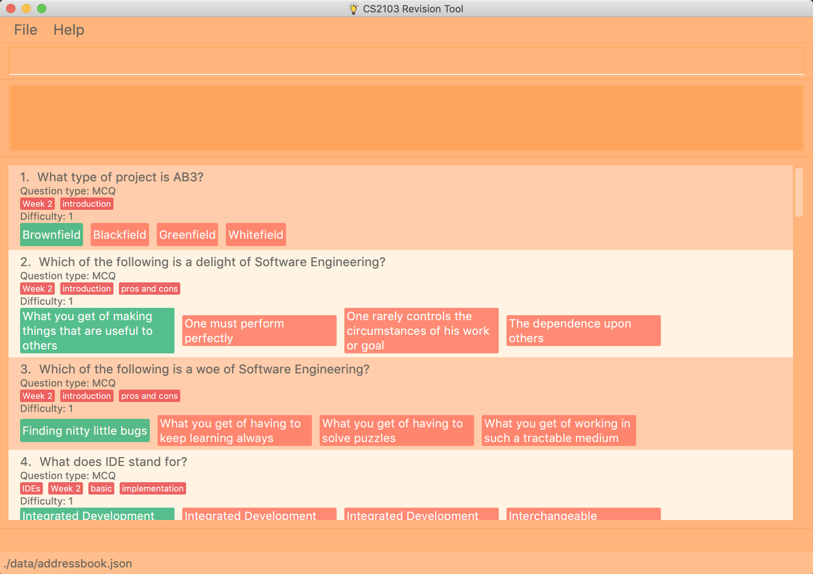
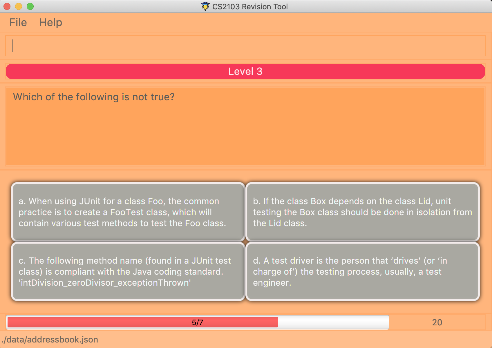

By: Team F10-3 Since: Aug 2019 Licence: MIT
1. Introduction
This portfolio contains a summary of the key contributions I made to the CS2103/T Revision Tool.
1.1. The Team
The team members are:
-
Sim Khiang Leon, a Year 4 Industrial & Systems Engineering student
-
Wilfred Bradley Tan, a Year 2 Computer Science / Business Student
-
Shaun Ng, a Year 4 Engineering Science Student
-
Neo Si Hao, a Year 4 Engineering Science Student
-
and myself, Keng Jun Xian, a Year 3 Communications and New Media student.
1.2. About the Project
The CS2103/T Revision Tool (RT) was conceptualized as a desktop quiz application for CS2103/T students. It is a brownfield project that stemmed from the existing Address Book 3 (AB3) application, which can be found at: Address Book - Level 3. Some key features of the app include: Adding questions to the test bank, being able to start quizzes based on the questions, and being able to set a timer for quizzes.


2. Summary of contributions
As the person in charge of the Model component, I worked closely with team lead Wilfred to handle the end to end implementation of True/False and Multiple Choice questions based off Wilfred’s proposed application structure. I also developed a Timer feature which is used throughout all quiz sessions. Building upon the timer, I further contributed to the different quiz modes, namely the Custom Mode Command.
-
Major enhancement: added Custom Mode Command
-
What it does: The user is able to filter quiz questions by category and/or difficulty. The user is also able to set a custom timer.
-
Justification: Without this feature, the user would only be able to start quizzes based on all questions in the test bank, with a fixed time limit. The ability to customize the quiz settings is highly important and covers many use cases for the target user. For example, the student who wishes to practice under test conditions can set the appropriate time per question, and the advanced student who has mastered all the level 1 and level 2 questions can choose to attempt only level 3 questions.
-
Highlights: This feature was built upon two other system-wide features, Timer and List Command. This required a deep understanding of the Model, in particular, how to access the Model through various predicates built upon the fields of the Answerable class.
-
-
Minor enhancements:
-
Implemented the List command that is used internally (in Custom Mode) and on the client-side to filter the list of test questions by category and/or difficulty.
-
Created the foundation Mcq, TrueFalse and Saq classes.
-
Implemented a timer that is used across all quiz modes. The timer is also able to skip to the next question when the countdown reaches zero.
-
Implemented the UI code for displaying MCQ options in the quiz window.
-
-
Code contributed: You can view the code I contributed to this project here, window=blank
-
Other contributions:
-
Project management:
-
Managed release for v1.3 on GitHub.
-
-
Enhancements to existing features:
-
Wrote Model and QuizWindowParser related tests such as TrueFalseTest and McqInputCommandTest.
-
Refactored EditCommand class to handle editing of different question types.
-
-
Documentation:
-
Set up About Us page.
-
-
3. Contributions to the User Guide
Given below are sections I contributed to the User Guide. They showcase my ability to write documentation targeting end-users. |
3.1. Listing all questions : list
Shows a list of all questions in the test back. If appended with a category and/or difficulty, list will show all questions
matching the chosen category and/or difficulty.
Format: list [cat/CATEGORY] [diff/DIFFICULTY]
If no category or difficulty is stated (i.e. list), program will list the entire question bank.
|
Examples:
-
list cat/requirements -
list cat/requirements diff/2
3.2. Locating questions: find
Finds questions whose descriptions contain any of the given keywords.
Format: find KEYWORD [MORE_KEYWORDS]
Examples:
-
find User
ReturnsHow do you gather user requirements?andWhat is the recommended user story format? -
find User, Brownfield, Greenfield
Returns any question containing descriptionsUser,Brownfield, orGreenfield
3.3. Mark question as starred during quiz [coming in v2.0]
User will be able to star questions during the quiz by entering star for the current question they are on. The question will be updated as "starred", so that the user will remember that they
had problems with that particular question during the quiz.
3.4. Enter short code during quiz sessions`[coming in v2.0]`
User will be able to type in code during the quiz, and the app will provide a syntax checker which will not allow the user to submit his code if there are syntax errors.
For all quiz modes, the current question will be skipped when the timer reaches zero. The question will be marked as wrong, and the next question will be shown with the updated timer.
3.5. Custom Mode
Category, Difficulty and Timer (must be above 1 second) can be customised by the user. Decimal values will be truncated, i.e.
start mode/custom timer/5.34 will start the quiz with a time limit of 5 seconds for each question.
Levels are also sorted according to
difficulty. The prefixes are optional, and if no prefixes are provided, custom mode will begin a quiz with normal mode settings.
4. Contributions to the Developer Guide
Given below are sections I contributed to the Developer Guide. They showcase my ability to write technical documentation and the technical depth of my contributions to the project. |
4.1. UI component
API : Ui.java
The abstract class ParentWindow consists of individual Ui parts e.g.CommandBox, ResultDisplay, AnswerableListPanel, StatusBarFooter etc. All Ui classes inherit from the abstract UiPart class.
The UI component uses JavaFx UI framework. The layout of these UI parts are defined in matching .fxml files that are in the src/main/resources/view folder. For example, the layout of the MainWindow is specified in MainWindow.fxml
The MainWindow inherits from the ParentWindow class and handles the display of information in the configuration mode. Key responsibilities of the MainWindow include
-
Execute user commands through the
CommandBoxusing theLogiccomponent. -
Listen for changes to
Modeldata so that the UI can be updated to reflect the modified data. This occurs for two types of situations-
Direct modification to the information inside the Answerables List, such as
AddCommandorEditCommand -
Filtering of the currently shown list, for commands such as
FindCommandandListCommand
-
The StartQuizWindow inherits from the ParentWindow class and handles the display of information during quiz mode. It has an additional ScoreProgressAndTimerGridPane Ui component, which
is used to contain score progress and timer related Ui. Key responsibilities of the StartQuizWindow include
-
Execute user answer input, e.g. "A", "B", "C", "D" for
Mcq -
Adapt to changes in the current
Answerableand update the Ui accordingly based on a few typical situations-
from the four options of
Mcqto the two options forTrueFalse -
update the progress bar for every
Answerable -
update the timer every second and switch to the next
Answerablewhen countdown reaches 0.
-
4.1.1. Design Considerations
Aspect: Implementation of the Ui for both windows
-
Alternative 1 (current choice): Have a parent class
ParentWindowwhich is extended byMainWindowandStartQuizWindow-
Pro1: Adheres to the Single Responsibility Principle, where the
MainWindowonly has one reason to change, and changes in quiz mode should not affect theMainWindow -
Pro2: The abstract
ParentWindowclass follows the Open/Closed Principle, where theStartQuizWindowextends upon the Ui components and adds it’s own Timer and ProgressBar Ui component. Each class is also able to have their own implementation of theexecuteCommand(String commandText)method. -
Con: Dependency between
MainWindowandStartQuizWindowclasses in the methodsMainWindow#handleStartandStartQuizWindow#handleEndrespectively
-
-
Alternative 2 (initial choice): Handle all user commands and changes in Ui within the MainWindow.
-
Pro: Less overall code, quiz mode only needs to edit the content in the
AnswerableListPanel. -
Con: As the CommandBox is a functional interface, it can only take in one abstract method as a parameter. This would mean that
MainWindow#executeCommandwould need to handle all cases of user inputs, for both answerable input commands and configuration mode commands. TheMainWindow#executeCommandwould be very long with complicated logic, thus violating SLAP.
-
4.2. List feature
ListCommand` extends Command that will read in user command and execute the command result. User can filter by Catergory and/or Difficulty
4.2.1. Design Considerations
Aspect: Showing the filtered list
-
Current Implementation
ListCommand#excutecombines theCategoryPredicateandDifficultyPredicateto update the answerable list throughModel#updateFilteredAnswerableList-
Pro: Uses Java 8 streams which supports immutability. This is in line with the immutability clause enforced by the
ObservableListreturned byModel#updateFilteredAnswerableList
-
4.3. Proposed Features
4.3.1. Star Answerable Command
Overview of feature
User will be able to star an Answerable during the test, which marks the Answerable
to remind them to revisit it after the test. The Answerable will have an additional boolean field star.
The code flow follows the sequence diagram in section 3.2.3, but without the call to Answerable#isCorrect.
The LogicManager then calls execute(String) in the reference frame "edit question as starred". This will involve the EditCommand
which is typically used in the configuration mode. It is now being called internally inside the quiz mode to update the Answerable as starred.
Answerable as starred.Aspect: Updating the Answerable to be marked as starred while inside quiz mode.
-
Alternative 1 (current choice): Update the
Answerablethrough a call toLogicManager#execute. This is primarily used during the configuration mode and not the quiz mode.-
Pro: Uses existing commands to implement a new feature for the user, appropriate code reuse
-
Con: No clear separation of logic as quiz mode should not know about configuration mode commands.
-
-
Alternative 2: Directly edit the
Answerableas it is accessible in theexecute(String, Answerable)for quiz mode commands.-
Pro: Less code needed.
-
Con: It breaks the implicit immutability of the
Answerable, which should only be edited through theEditCommand(which creates a newAnswerable)
-
4.3.2. Input short code for quiz questions
Overview of feature
User will be able to input code, during the quiz session, and the RevisionTool will check the syntax as the user types in the code.
The activity diagram is outlined below.